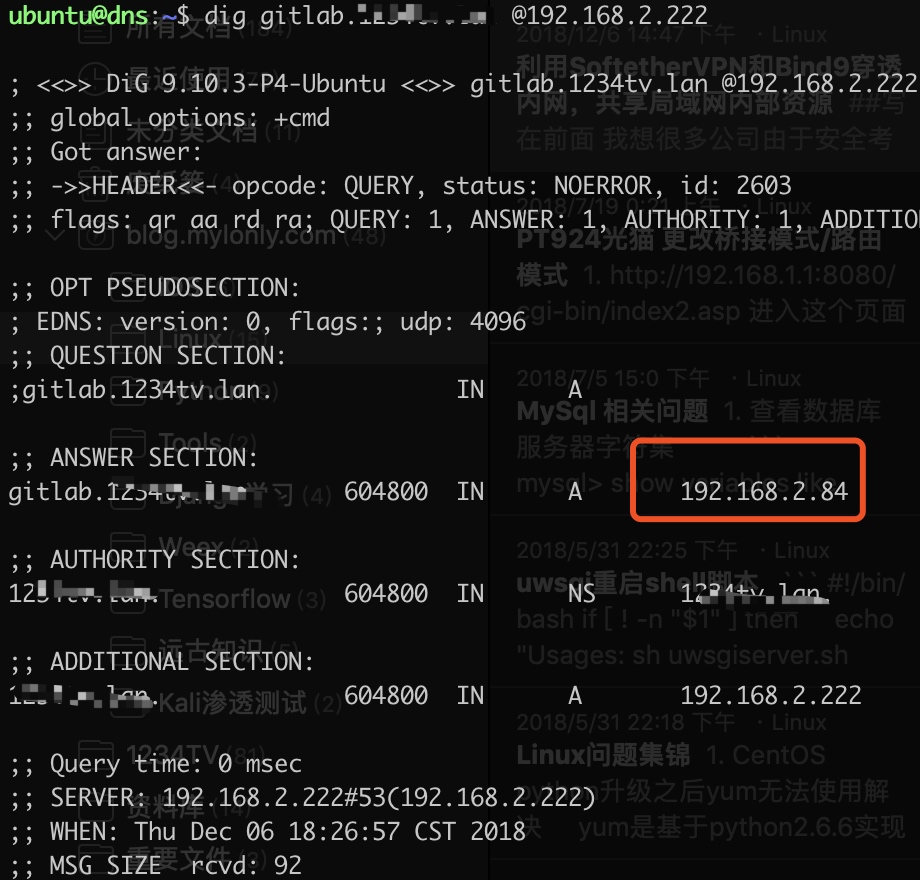

利用SoftetherVPN和Bind9穿透内网，共享局域网内部资源
写在前面
我想很多公司由于安全考虑，一些内部系统(Git仓库、OA之类）的一定是放在公司内部的服务器上，只有在公司的网络下才能够访问，但是一些公司的随着业务的发展，肯定会出现一些外地的同事（外地的办事处、研发中心、销售团队等等）这种情况，这样一来，在内部服务不迁移到外网的前提下，如何让外地的同事能访问到内网这些资源就成了一个必须要解决的问题了。
其实内网穿透有很很多种解决方案，本文只是利用SoftetherVPN以及Bind9这两个工具提供另一种解决思路。
本文所提到的解决方案有如下优点:
1. 原来的内部资源不需要额外的配置改动
2. 需要身份认证，只有拥有权限的外部人员才能访问内部资源
3. 只有加入了共享网络的内部资源才能被外部访问，没有开放共享的内部资源的无法访问
4. 可以做到通过相同的域名访问同一个内部资源
5. 通过LPTP,LPSec协议支持OS X以及iOS设备访问
当然也有如下不足:
1. 需要一台拥有公网IP的服务器作为中心服务器
2. 由于本文的解决方案是基于虚拟局域网来实现的，因此拥有局域网内一些无法回避的缺点。
原理

本解决方案利用了SoftetherVPN提供的Ad-Hoc VPN将内网服务器和外部用户通过VLAN连接在同一个局域网内，然后通过支持智能解析的DNS服务器，将域名解析到对应的虚拟局域网IP。
如果是内网用户，则直接通过DNS服务器将域名解析到内部资源对应的内网IP。
部署
本次部署大部分采用Docker方式部署，如果需要手动安装的，可以在这个网站下载对应的安装包
Docker 环境
略，不再本文讨论范围之内
安装Softether Server
拉取镜像
siomiz/softethervpn启动vpnserver
docker run -d --cap-add NET_ADMIN \ -p 500:500/udp \
-p 4500:4500/udp \
-p 1701:1701/tcp \
-p 1194:1194/udp \
-p 5555:5555/tcp \
-p 443:443/tcp \
-p 992:992 \
siomiz/softethervpn记得要开放对应的端口
安装Softether ServerManger
虽然Softether 提供了mac版的安装包，但本人装完之后发现其实是套了一个wine的环境，在mac上体验极差，所以此处推荐找一个windows电脑安装vpn server manager，下载地址在此
由于是windows上的安装教程，大部分都是图片，为了不占文章篇幅，就不放在文章里介绍了，各位可以参考官网或者这篇博客
其中需要注意的是，在虚拟HUB管理页面中的虚拟NAT和虚拟DHCP服务器，点击SecureNAT,然后设置DHCP服务器的网段，以及DNS服务器为下面将要搭建的DNS服务器地址

部署DNS服务器
安装bind9
sudo apt-get install bind9增加两个视图文件,在/etc/bind/目录下
name.2.confacl "2" { 192.168.2.0/24;
};name.111.conf
acl "111" { 192.168.111.0/24;
};两个视图文件主要是为了区分来源IP所在的网段，然后根据不同的网段返回不同的解析结果，在本解决方案当中，192.168.2.0/24网段为内网网段， 192.168.111.0/24为VPN生成的虚拟局域网的网段
新建不同网段对应的不同的解析记录文件，也在/etc/bind/目录下
1234tv.lan-2.zone
$TTL 604800 @ IN SOA xxxx.xx. root.xxxx.xx. (
2 ; Serial
604800 ; Refresh
86400 ; Retry
2419200 ; Expire
604800 ) ; Negative Cache TTL
;
@ IN NS xxxx.xx.
@ IN A 192.168.2.222
gitlab IN A 192.168.2.841234tv.lan-111.zone
$TTL 604800 @ IN SOA xxxx.xx. root.xxxx.xx. (
2 ; Serial
604800 ; Refresh
86400 ; Retry
2419200 ; Expire
604800 ) ; Negative Cache TTL
;
@ IN NS xxxx.xx.
@ IN A 192.168.111.222
gitlab IN A 192.168.111.84将视图文件和解析文件写入Bind9主配置文件
sudo vim /etc/bind/name.conf增加如下内容，声明两个视图，view_2,view_11,可以注释掉默认带的配置文件，如果你没有其他的用途的话,注意每一行后面的分号，不可缺少。
#include "/etc/bind/named.conf.options"; #include "/etc/bind/named.conf.local";
#include "/etc/bind/named.conf.default-zones";
include "/etc/bind/name.2.conf";
view "View_2" {
match-clients {"2";};
zone "xxxx.xxx" IN {
type master;
file "xxxx.xxx-2.zone";
allow-update {none;};
};
};
include "/etc/bind/name.111.conf";
view "View_111" {
match-clients {"111";};
zone "xxxx.xxx" IN {
type master;
file "xxxx.xxx-111.zone";
allow-update {none;};
};
};然后启动Bind9 服务
sudo /etc/init.d/bind9 start验证解析
dig gitlab.xxx.xx @192.168.2.222
安装Vpn Client
所有需要共享给外部访问的内部服务器都需要安装vpn client连接上vpn server，下面的方法为linux 下docker方式部署vpn_client方法，windows端请参考这篇文章
拉取镜像
sudo docker pull mitsutaka/softether-vpnclient启动镜像连接之前创建的vpn server
docker run -d --name=softether-vpnclient \ --net=host --privileged \
-e VPN_SERVER=<Softether VPN server> \
-e VPN_PORT=<Softether VPN port> \
-e ACCOUNT_USER=<Registered username> \
-e ACCOUNT_PASS=<Registered password> \
-e VIRTUAL_HUB=<Virtual Hub name> \
-e TAP_IPADDR=<IP address/netmask> \
mitsutaka/softether-vpnclient
```
服务器端，VIRTUAL_HUB端填入之前在manager上新建的虚拟HUB名称 ，TAP_IPADDR，最好采用指定IP的方式，尤其是DNS服务器，需要固定IP地址
结束语
至此，这个简单的内网穿透方案算是部署完成，内网用户可以直接通过设置内网DNS服务器来通过域名访问内部服务器，外网用户在使用vpn clinet连接上虚拟局域网之后也能通过相同的域名访问内部服务器资源。
写这篇文章，一方面是觉得自己以后可能还会有此需求，怕自己遗忘，权且当做记录。另外也是想也可能有别的同学有这方面的需要，写出来共享一下。
Copyright © 2015 Powered by MWeb, Theme used GitHub CSS.